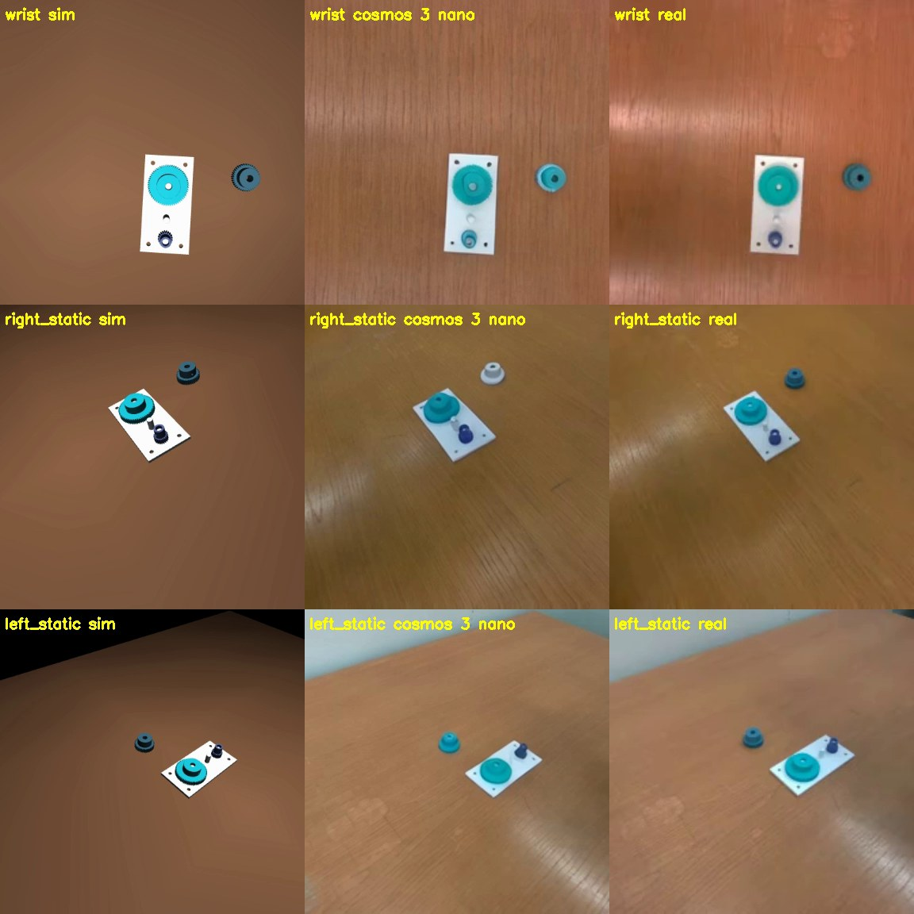

Augmenting Simulation with World Models for Sim2Real Style Transfer ongoing
A simulator augmented by a style-transfer world model can act both as a trustworthy evaluator and as a scalable training-data engine. On a 2.5 mm-tolerance gear-assembly task (MuJoCo, Franka FR3), policy success in augmented sim correlates with real-robot success at Pearson 0.93. A curriculum-PPO teacher with augmented on-policy distillation reaches ~100% success in sim-only training. Style-transfer inference on Cosmos 3 Nano was accelerated 8.4× (2.8 s to 0.33 s per frame on GH200) via DMD2 distillation, context parallelism, and hierarchical sparse attention.